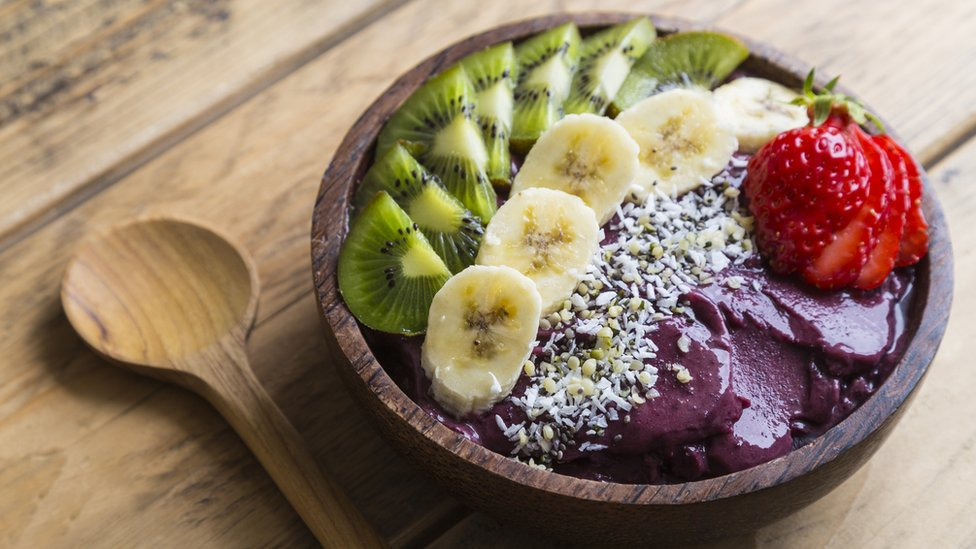

Açai

Descripcion
Repleto de vitaminas, proteínas, fibra, aminoácidos, grasas monoinsaturadas saludables y hasta 30 veces más antioxidantes que el vino tinto, se dice que el açaí estimula la energía, fortalece el sistema inmunológico, ayuda al crecimiento muscular y combate los efectos del envejecimiento.
Sin duda, el açaí fue y es un alimento que podemos describir como democrático en el sentido de que siempre ha estado en la mesa, y ciertamente en la comida (porque no todos usaban las mesas) de nativos, colonos, ricos, pobres, civiles, militares, religiosos o no religiosos, alfabetizados o analfabetos", dice la profesora Leila Mourão Miranda, de la Universidad Federal de Pará, quien escribió una tesis sobre el açaí.
Ingredientes:
- Plátano
- Arándanos
- Frambuesas
- Almendras
- Leche
- Açai molido
- Semillas de amapola
- Copos de avena
- Manzanas
Preparacion:
- pelamos y cortamos los plátanos en rodajas y los congelamos. Contamos también con que los arándanos y las frambuesas están congeladas.
- Colocamos la fruta congelada en el vaso de una batidora potente junto con las almendras.
- Regamos con la mitad de la leche y el açai molido (cinco gramos es el correspondiente a una cucharada sopera rasa).
- Trituramos hasta homogeneizar y probamos el espesor.
- Añadimos el resto de la leche, poco a poco y triturando de nuevo hasta alcanzar la consistencia deseada.
- Es muy importante tener una batidora potente pues los trozos de fruta congelada ofrecen mucha resistencia.